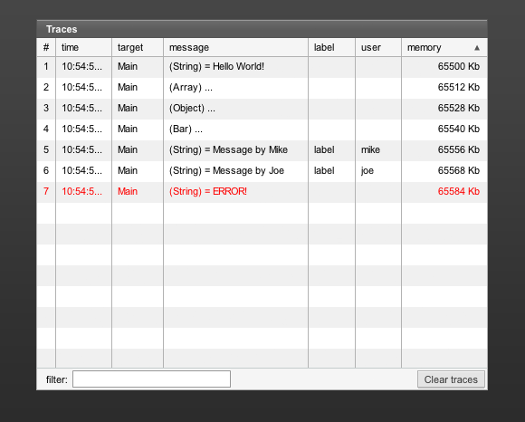
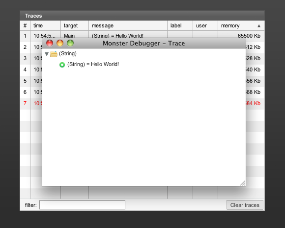
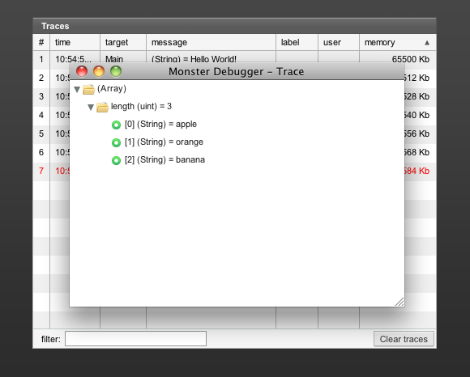
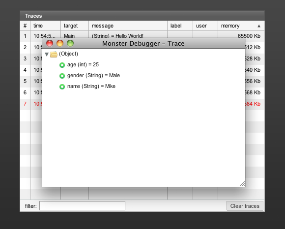

10. The traces panel
When De Monsters designed the very first version of the Monster Debugger (0.9) it only had one feature: The traces panel. This panel is by far the most used feature within the Monster Debugger. It displays messages (so called traces) from you code and allows you to inspect your data. The traces panel shows it all: Strings, Numbers, Arrays, XML, Objects, Vectors and even all your custom classes.
Commonly used scenarios include tracing XML data from a server to see it's structure, tracing responses from poorly documented social network API's or just tracing a message to see if a function is called properly.
Tracing a simple message
MonsterDebugger.trace(this, "Hello World!");
Tracing an array
var fruit:Array = ["apple", "orange", "banana"]; MonsterDebugger.trace(this, fruit);
Tracing an object
var person:Object = {name:"Mike", age:25, gender:"Male"};
MonsterDebugger.trace(this, person); 
Tracing a custom class
var person:Object = {name:"Mike", age:25, gender:"Male"};
MonsterDebugger.trace(this, person);
Each trace message can be given a color or name. This can be useful for keeping overview in your traces or when working in a team of developers. The following examples shows how you can work with color and labels in your traces:
Tracing with a label or a person name
MonsterDebugger.trace(this, "Message by Mike", "mike", "label"); MonsterDebugger.trace(this, "Message by Joe", "joe", "label");
Tracing an error:
MonsterDebugger.trace(this, "ERROR!", "", "", 0xFF0000;